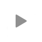
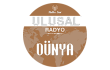

Konya Esas Radyo Dinle

Radyo Dinle Canlı
Popüler Nostalji Radyo Dinle
1
Number 1 Türk Doksanlar
2
Pal Nostalji
3
Radyo 45 lik
4
Radyo Doksanlar
5
Altın Şarkılar
Konya Radyoları Dinle
1
Konya Radyo Usta
2
Konya Genç Radyo
3
Konya Derya FM
4
Konya Esas Radyo
5
Konya Bey FM
Rastgele Radyo Dinle
1
Radyo Mega
2

Ulusal Radyo Dünya
3
Bursa FM
4
Radyo Bade
5
A Para Radyo